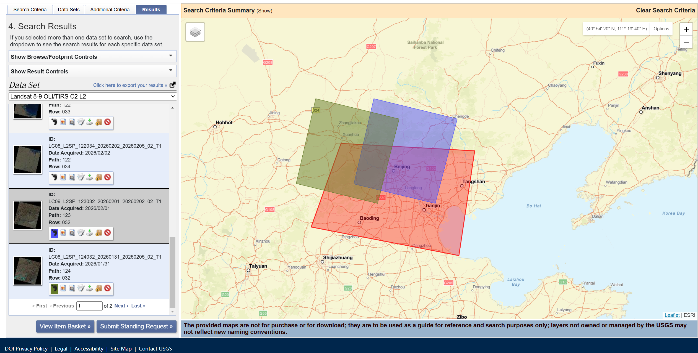
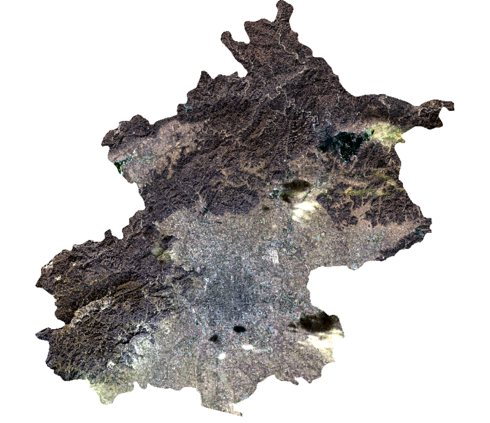
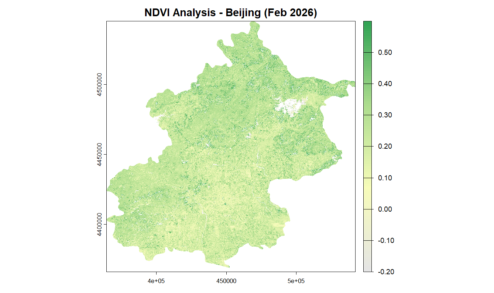
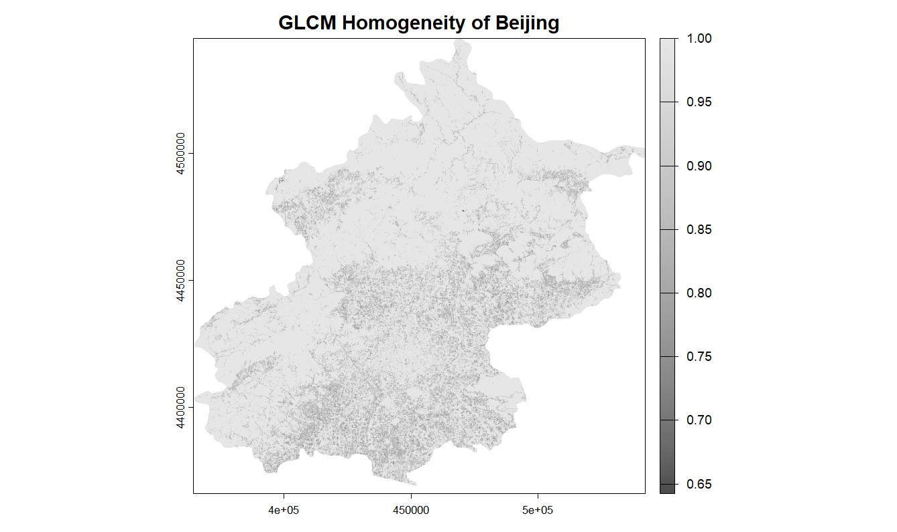
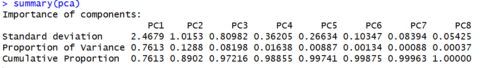
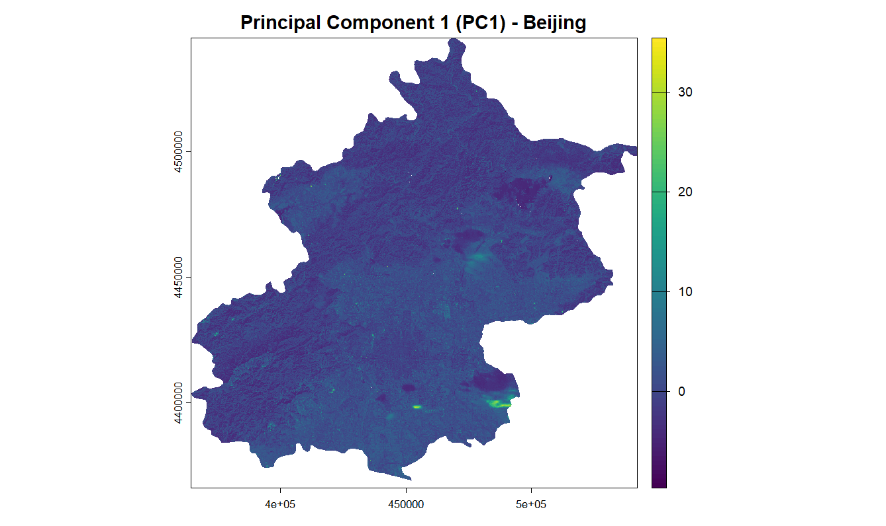

Week 3 Learning Diary: Remote Sensing Data Corrections and Enhancements
Mosaicking, Spectral Index, Texture Analysis, and PCA of Landsat Imagery: Beijing Case Study
Author
Jianshu Wu
Published
January 31, 2026
1. Content Summary
1.1 Physical Fundamentals and Correction Necessity
This week changed the way I think about satellite imagery. I used to see it as something similar to a digital photo, but now I understand that it is actually a measurement of electromagnetic radiation. Because of that, the original Digital Numbers (DN) cannot be used directly without some form of correction.
Radiometric Calibration: This is the first step in turning raw DN values into physically meaningful spectral radiance.
Core Concept: Radiance vs. Reflectance
Radiance is the total energy coming from the ground to the sensor, while reflectance describes how much incoming light is reflected by the surface. Reflectance is more useful for environmental comparison because it is more consistent across time and space (Joyce 2013).
1.2 Geometric and Atmospheric Corrections
Geometric Distortions: These can happen because of the sensor angle or terrain effects, and they are usually corrected with Ground Control Points (GCPs).
Atmospheric Correction: The atmosphere can scatter and absorb light, which affects the image. Dark Object Subtraction (DOS) is a traditional way to reduce this effect by assuming the darkest pixels should have close to zero reflectance (Jensen 2015).
1.3 Topographic Correction and Enhancements
In mountainous areas, slope and aspect can change the amount of sunlight reaching the surface, which affects reflectance values. The Cosine Correction Model is one way to reduce this terrain effect by using the incidence angle: \[\cos i = \cos \theta_0 \cos \theta_s + \sin \theta_0 \sin \theta_s \cos(\Phi_0 - \Phi_s)\]
2. Applications of the Content
2.1 Data Acquisition and Methodology
Although this week’s lectures covered radiometric, atmospheric, and topographic corrections in detail, the practical work in this report is mainly about mosaicking, feature extraction, and dimensionality reduction.
For this case study, I used Landsat Collection 2 Level-2 products for the Greater Beijing area, acquired on Jan 31 and Feb 1, 2026.
Why bypass DOS Atmospheric Correction?
Since these Landsat scenes are provided as Analysis Ready Data (ARD), they have already been rigorously atmospherically corrected by the USGS. Applying an extra DOS correction here would redundantly alter the data and introduce errors. Instead, I focused on rescaling the stored integer values into surface reflectance values.

Figure 1: USGS Earth Explorer search interface for Beijing tiles.
2.2 Mosaicking and Rescaling Workflow
Because Landsat data is collected in separate tiles, I first needed to merge the two neighbouring scenes. I used the terra::mosaic() function, and the overlap was averaged with the mean option. This helped reduce obvious boundaries between the two scenes, although some small differences may still remain because they were taken on different dates.
Show code
# Mosaicking and Masking to Beijing Boundarybeijing_mosaic <- terra::mosaic(LC08, LC09, fun="mean")beijing_clipped <- beijing_mosaic %>% terra::crop(., beijing_boundary) %>% terra::mask(., beijing_boundary)# Rescale Level-2 bands to Surface Reflectance (SR)beijing_sr <- (beijing_clipped *0.0000275) -0.2# Simple value-range cleaning# A simple cleaning step was used to suppress problematic pixels, # although no full pixel-level QA cloud mask was implemented in this workflow.beijing_sr[beijing_sr <-0.2| beijing_sr >1.2] <-NA# 4. Plot the mosaicked study area as a true colour imageterra::plotRGB( beijing_clipped,r =4, g =3, b =2,stretch ="lin",main ="Mosaicked Landsat 8/9 Product - Beijing")

Figure 2: The mosaicked Landsat 8/9 product clipped to the Beijing boundary.
2.3 Spectral and Structural Feature Extraction
NDVI: Spectral Interpretation
Dealing with Non-physical Anomalies
Because the rescaling equation includes a negative offset (-0.2), certain dark pixels (like water or shadows) can produce denominators close to zero in the NDVI formula. Filtering the data to the theoretical NDVI range of [-1, 1] is essential to remove mathematical artifacts and restore the true visual contrast.
Show code
# Calculate NDVIndvi <- (beijing_sr[[5]] - beijing_sr[[4]]) / (beijing_sr[[5]] + beijing_sr[[4]])# Clean physically implausible extreme values:# remove all anomalous pixels falling outside the theoretical NDVI range of [-1, 1]ndvi[ndvi <-1| ndvi >1] <-NA# Define a new colour paletteveg_palette <-colorRampPalette(c("#e5e5e5", "#f7fcb9", "#addd8e", "#31a354"))(100)# Plot the NDVI map again, and fix the display range to improve visual contrastplot(ndvi, col = veg_palette, zlim =c(-0.2, 0.6), # fix the display range to enhance visual contrastmain ="NDVI Analysis - Beijing (Feb 2026)", axes =TRUE)
Interpretation of Figure 3: The NDVI map shows generally low vegetation activity across Beijing in early February, which is consistent with winter dormancy. Slightly higher values are visible in some mountain and vegetated areas. Some white gaps remain after cleaning, indicating pixels with invalid or unstable NDVI values that may be linked to residual cloud contamination, very bright surfaces, water, or other problematic pixels. This highlights the importance of quality control before interpretation.
GLCM Texture: Structural Interpretation
Show code
# Compute GLCM Homogeneity using Band 4library(GLCMTextures)textures1 <-glcm_textures( beijing_sr[[4]],w =c(7, 7),n_levels =4,quant_method ="range",metrics ="glcm_homogeneity")# Plot GLCM Homogeneityplot( textures1,main ="GLCM Homogeneity of Beijing",col =gray.colors(100))
Interpretation of Figure 4: The GLCM homogeneity surface ranges from about 0.65 to 1.00 and appears fairly smooth overall. Lower homogeneity is more visible in parts of the urban plain, where dense built-up structures create greater local variation. By contrast, many northern and peripheral areas appear more homogeneous, although this pattern should be interpreted carefully because the 7x7 window may smooth fine-scale differences and mountain terrain can also introduce local texture complexity.

Figure 3: NDVI Analysis of Beijing.

Figure 4: GLCM Homogeneity map of Beijing.
2.4 Dimensionality Reduction via PCA
Fusing spectral data with spatial metrics increases dataset dimensionality, making Principal Component Analysis (PCA) a highly effective tool to compress the combined multi-band stack into uncorrelated components without losing critical environmental information (Schulte to Bühne and Pettorelli 2018).
Show code
# Data Fusion: Concatenate the multi-spectral bands and texture featuresraster_and_texture <-c(beijing_sr, textures1)# PCA applied to the combined feature stack (standardized)pca <-prcomp(as.data.frame(raster_and_texture, na.rm =TRUE),center =TRUE,scale =TRUE)# Show PCA summarysummary(pca)# Project PCA results back to raster spacepca_raster <-predict(raster_and_texture, pca)# Plot PC1plot( pca_raster[[1]],main ="Principal Component 1 (PC1) - Beijing")
Interpretation of Figure 5 & 6: The summary table shows that PC1 explains approximately 76% of the standardized variance. The spatial projection of PC1 suggests that, in addition to broad landscape differences, some of the highest values are likely associated with residual clouds or haze that remain visible in the true-colour composite. Because PCA captures the strongest sources of variance, it is sensitive to extreme reflectance values. This suggests that incomplete cloud masking may have influenced the first component and therefore affected downstream interpretation.

Figure 5: PCA Summary table showing cumulative proportion of variance.

Figure 6: Spatial projection of Principal Component 1 (PC1) over Beijing.
3. Personal Reflection
3.1 Understanding the “Black Box”
Even though modern platforms now provide Analysis Ready Data (ARD), I think it is still important to understand what is happening behind the scenes. If I work with raw drone imagery or data from less processed sensors in the future, I will need to understand methods like DOS and radiometric calibration in order to make sure my results are reliable.
3.2 Methodological Limitations and Future Improvements
This week’s exercise made me realise how important pre-processing is for later analysis. There are two main things I would improve next time:
QA-based Cloud Masking: In this workflow, I mainly relied on visual checking and simple value-range filtering, which means some remaining cloud or shadow contamination may still be present. In future work, I would like to use the QA_PIXEL band to mask clouds and shadows more properly.
Topographic Correction: This would be especially useful for northern Beijing because of the mountainous terrain. I did not include it this time because of time and data limitations, but it would be a valuable next step if I wanted more reliable results in mountain areas.
Schulte to Bühne, H., and N. Pettorelli. 2018. “Better Together: Integrating and Fusing Multispectral and Radar Satellite Imagery to Inform Biodiversity Monitoring, Ecological Research and Conservation Science.”Methods in Ecology and Evolution 9 (4): 849–65. https://doi.org/10.1111/2041-210X.12942.